Además de los inventores y personas ilustres que hemos visto en la historia de la animación, hay otras personas importantes que son llamados animadores. Un animador es un artista que hace diferentes imágenes para crear un movimiento y así una animación. Los animadores pueden trabajar en diferentes campos como, por ejemplo, en Internet, en los videojuegos, en el cine o en la televisión. Normalmente estos trabajos se realizan juntándose varios animadores. Hay diferentes métodos de crear las imágenes que dependen del animador. Puede haber animadores de personajes o de efectos especiales. A continuación, mostramos algunos de los animadores más importantes:
Frederick Bean Fred "fue animador y director de dibujos animados en la época de oro de Hollywood. Creador de los famosos personajes Bugs Bunny y el pato Lucas (Daffy Duck) en la Warner Bros (en el edificio Termite Terrace) y luego de otros como el lobo y Droopy para la Metro-Goldwyn-Mayer."
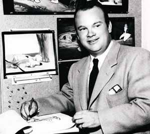 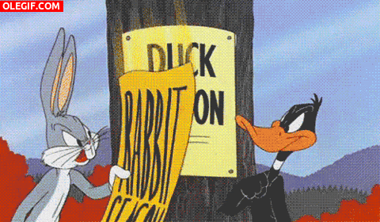
Joseph Barbera Joseph Roland "Joe" Barbera (24 de marzo de 1911- 18 de diciembre de 2006) fue un animador, caricaturista, creador de storyboards, director y productor estadounidense. Cofundó Hanna-Barbera (actualmente conocida como Cartoon Network Studios) junto a William Hanna. El estudio creó dibujos animados los cuales obtuvieron mucha popularidad, tales como Tom y Jerry, The Huckleberry Hound Show, Los Picapiedra, Los Supersónicos, y Scooby-Doo.
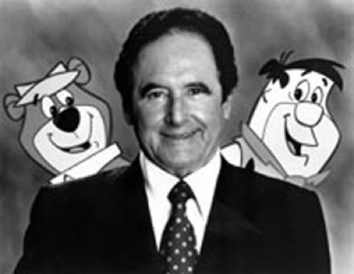 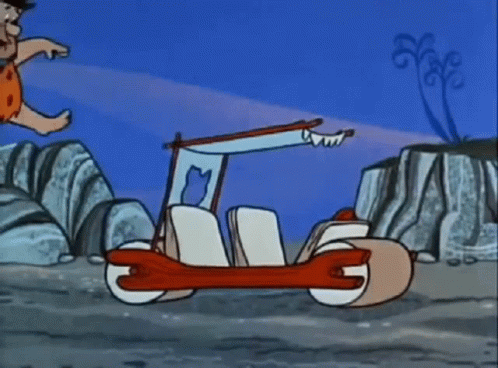
Walt Disney Walter Elias Disney (n. Chicago, Illinois, 5 de diciembre de 1901 – Los Angeles, California, 15 de diciembre de 1966), fue un productor, director, guionista y animador estadounidense. Fue el fundador, junto con su hermano Roy O. Disney, de The Walt Disney Company[1], empresa que en la actualidad genera unos ingresos anuales de 30.000 millones de dólares, y el principal artífice de un estilo inconfundible de películas de dibujos animados.
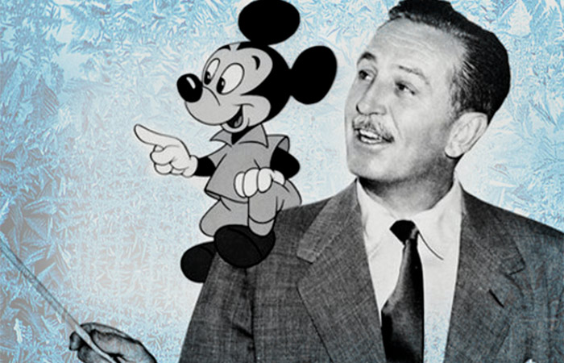 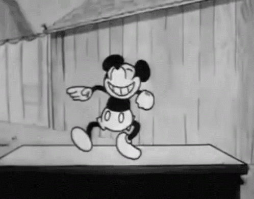
Walter Lantz Walter Lantz (27 de abril de 1900 – 22 de marzo de 1994) fue un caricaturista y animador estadounidense, conocido por fundar el Walter Lantz Studio y crear al Pájaro Loco. Algunos personajes del universo de Lantz (dibujos animados y tiras cómicas) son Oswald el conejo afortunado, Space Mouse, Pájaro Loco, Homer Pigeon, Chilly Willy, Andy Panda, Charlie Chicken y muchos otros.
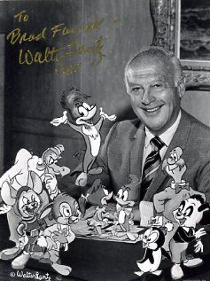 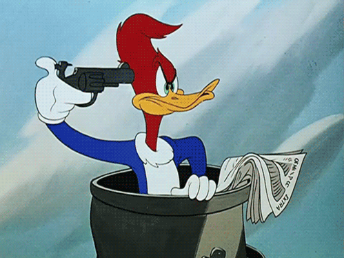
Chuck Jones Chuck Jones (1976)Charles Martin "Chuck" Jones (21 de septiembre de 1912 – 22 de febrero de 2002) fue un animador, caricaturista, guionista, productor y director estadounidense, siendo su trabajo más importante los cortometrajes de Looney Tunes y Merrie Melodies del estudio de animación de Warner Brothers. Dirigió varios cortos clásicos protagonizados por Bugs Bunny, Pato Lucas, El Coyote y el Correcaminos, Pepé Le Pew y otros personajes de Warner, incluyendo los cortos What's Opera, Doc? (1957) y Duck Amuck (1952), estableciéndose como un importante innovador y guionista.
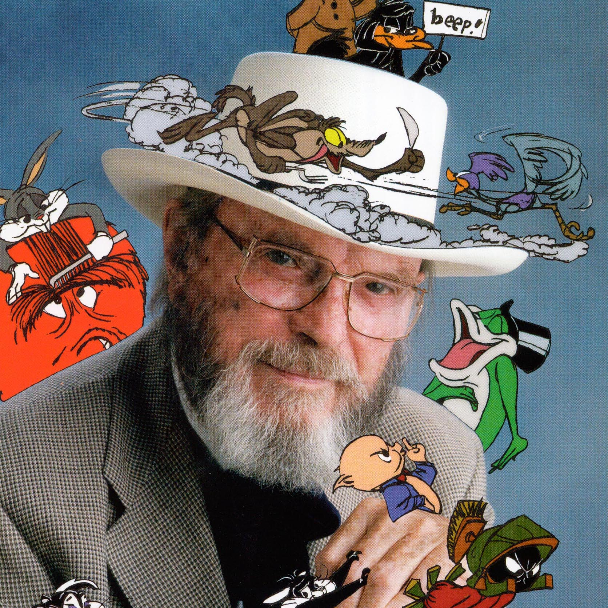 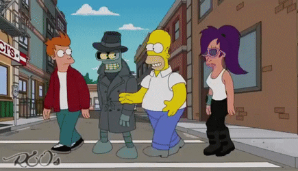
Tampoco nos debemos de olvidar de unos animadores actuales
Butch Hartman Elmer Earl Hartman IV, más conocido como Butch Hartman, es un animador, dibujante, productor y director estadounidense. Es mayormente conocido por ser el creador de las series animadas para Nickelodeon Los padrinos mágicos, Danny Phantom, T.U.F.F. Puppy y su último trabajo Bunsen is a Beast
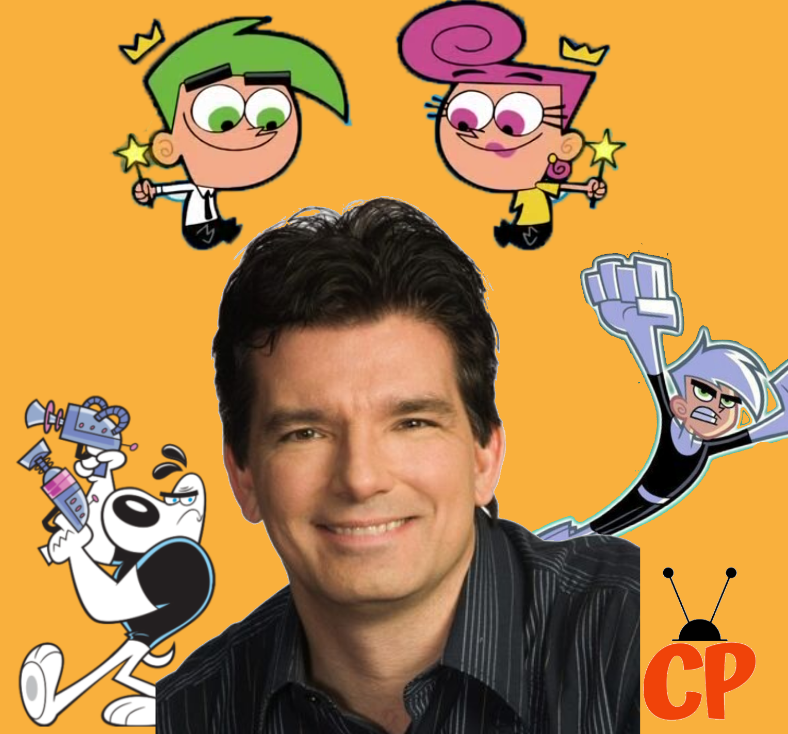 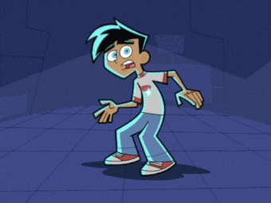
Matt Groening Matthew Abraham Groening, conocido como Matt Groening, es un dibujante, productor de televisión y escritor estadounidense, reconocido principalmente por ser el creador de Los Simpson y Futurama.
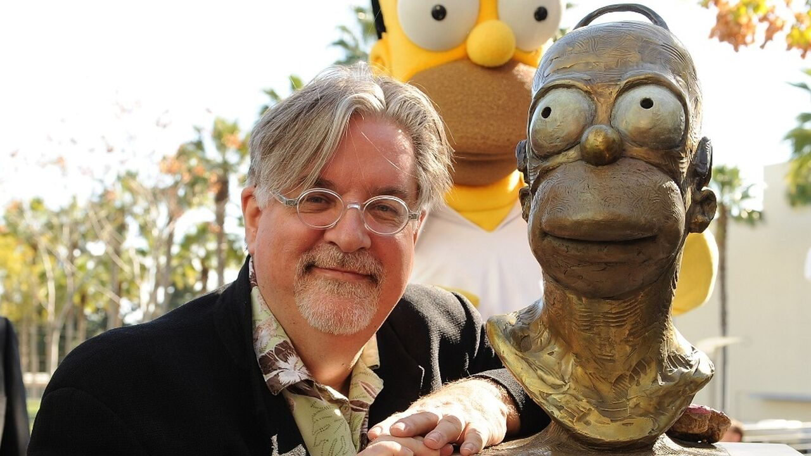